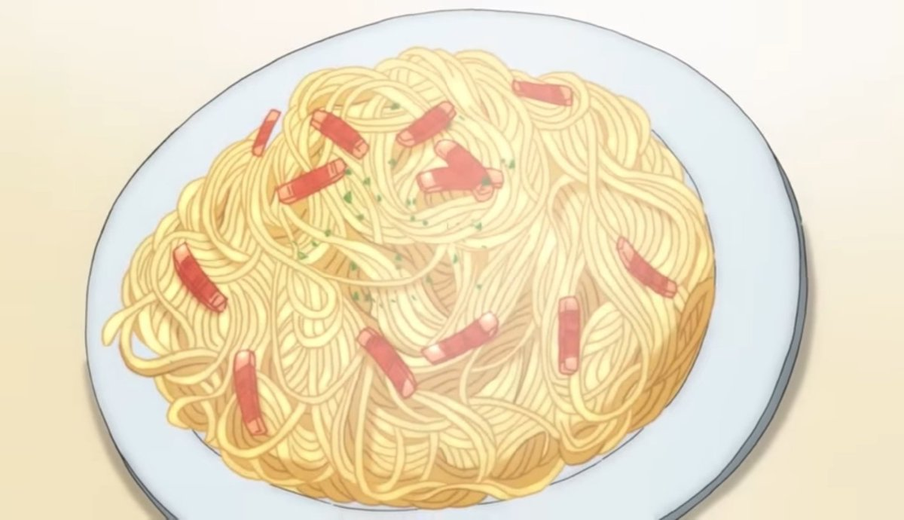

Description:
Very simple Korean styled Aglio e Olio using mainly garlic for flavor
Ingredients:
- 100g pasta
- 1L water
- 1/3 tbsp salt
- 1/3 cup pasta water
- 1/3 cup olive oil
- 2 tbsp minced garlic
- 4 whole garlic cloves
- Chives
- Peperoncino
- Parmesan cheese
Steps:
Directions for boiling pasta
- In a pot, season water with fine salt and boil over high heat
- When the water comes to a boil, add the spaghetti. Cook for 8 minutes
- Scoop out the cooked spaghetti onto a strainer and set aside
Directions for Aglio e Olio
- Chop the whole garlic in 0.2cm slices, and the chives in 0.3cm slices and set aside
- In a frying pan, add olive oil, sliced garlic, and stir-fry over medium heat
- When the oil begins sizzling, crush the peperoncino in half and add into the pan
- When the sliced garlic turns golden, add minced garlic and stir-fry
- When the minced garlic turns golden, take the cooked pasta that was set aside and lightly soak in the pasta water. Lightly shake off the excess moisture, and add into the pan
- Lightly stir-fry the garlic and pasta. Then, add pasta water and turn the heat up to stir-fry over high heat
- When the pasta and olive oil is thoroughly mixed and the flavor has seeped into the pasta, turn off the heat
- Plate the spaghetti and garnish with some chives
- Finally, sprinkle some Parmesan cheese powder